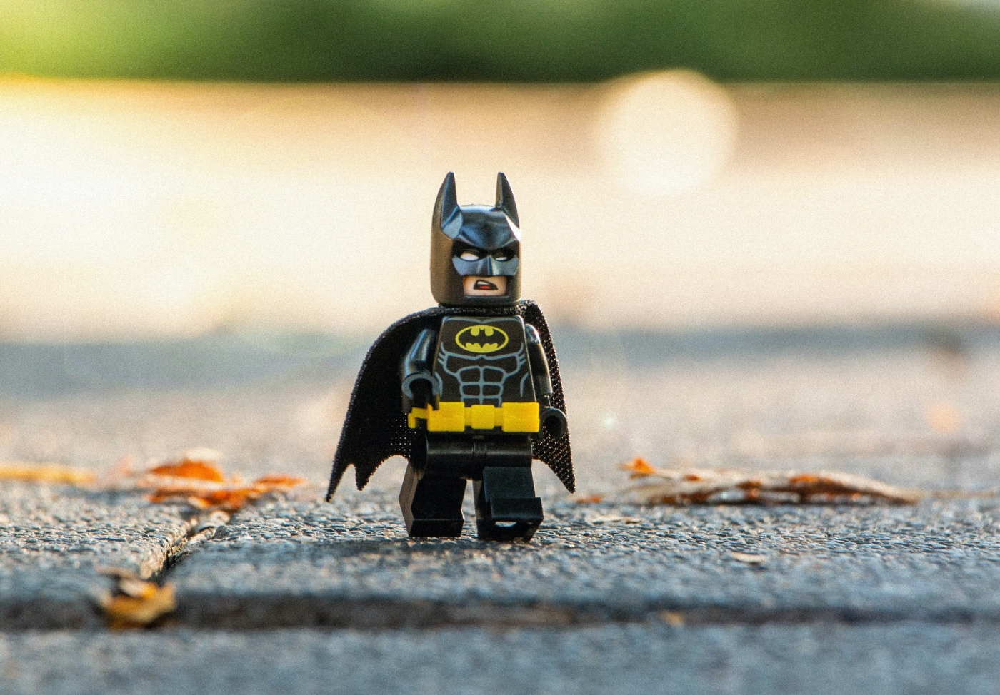

JL Heroes
Superman
Superman nació en el planeta Krypton y recibió el nombre de Kal-El al nacer. Cuando era bebé, sus padres, el científico Jor-El, y su esposa Lara Lor-Van, lo enviaron a la Tierra en una pequeña nave espacial momentos antes de que Krypton fuera destruido en un cataclismo natural. Su nave aterrizó en el campo estadounidense, cerca de la ciudad ficticia de Smallville. Fue encontrado y adoptado por los agricultores Jonathan y Martha Kent, quienes lo llamaron Clark Kent. Clark desarrolló varias habilidades sobrehumanas, como una fuerza increíble y una piel impermeable. Sus padres adoptivos le aconsejaron que usara sus habilidades en beneficio de la humanidad y decidió luchar contra el crimen como un justiciero. Para proteger su privacidad, se pone un traje colorido y usa el alias "Superman" cuando lucha contra el crimen. Aunque denominado, algunas veces, de manera poco halagadora, como «el gran Boy Scout azul» por otros superhéroes, Superman también es conocido como «El Hombre de Acero», «El Hombre del Mañana» y «El Último Hijo de Krypton» por el público general de los cómics. Bajo la identidad de Clark Kent, Superman vive en medio de los humanos como un «tímido reportero» del diario Daily Planet de Metrópolis. Ahí trabaja junto a la reportera Lois Lane, con la cual ha sido vinculado románticamente. Junto con el fotógrafo Jimmy Olsen y el editor en jefe Perry White. Superman tiene una extensa galería de villanos con su archienemigo el supervillano Lex Luthor.
Poderes
- Super Fuerza
- Super Velocidad
- Visión terminca
- Volar
Batman
La identidad secreta de Batman es Bruce Wayne (Bruno Díaz en algunos países de habla hispana),141516 un multimillonario magnate empresarial y filántropo dueño de Empresas Wayne en Gotham City. Después de presenciar el asesinato de sus padres, el Dr. Thomas Wayne y Martha Wayne en un violento y fallido asalto cuando era niño, juró venganza contra los criminales, un juramento moderado por el sentido de la justicia. Bruce Wayne se entrena física e intelectualmente y crea un traje inspirado en los murciélagos para combatir el crimen, con sus gadgets de combate del batcinturón y sus vehículos.
Poderes
- Ser rico

Wonder Woman
La Mujer Maravilla (en inglés: Wonder Woman) es una superheroína ficticia creada por William Moulton Marston para la editorial DC Comics. Es una princesa guerrera de las Amazonas, pueblo ficticio basado en el de las amazonas de la mitología griega. En su tierra natal es conocida como la princesa Diana de Temiscira pero fuera de esta utiliza la identidad secreta de Diana Prince. Está dotada de una amplia gama de poderes superhumanos y habilidades de combate de batalla superiores, gracias a sus dones obtenidos de los dioses y su amplio entrenamiento. Ella posee un gran arsenal de armas, incluyendo entre las principales el Lazo de la Verdad, un par de brazaletes mágicos indestructibles, su tiara, que sirve como arma, y en algunos relatos, en la edad de oro, tuvo un avión invisible. Pero más adelante, se le fue mostrando con la capacidad de volar cada vez con mayor frecuencia por lo que el avión invisible fue dejando de utilizarse.
Poderes
- Super Fuerza
- Agilidad
- Invulnerabilidad